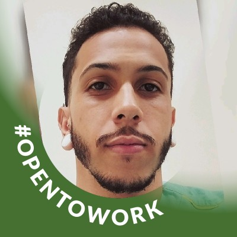

Emanuel —
Desenvolvedor Full-Stack & QA
Comecei minha jornada no desenvolvimento em 2026 e, desde então, cada linha de código tem sido uma conquista. Atualmente sou estagiário de QA na Escalar Comunicação em Belo Horizonte, onde conquistei a vaga após vencer uma competição de 2 semanas contra desenvolvedores do 5º semestre.
Estudante do 2º semestre de Técnico em Desenvolvimento de Sistemas (SENAC) e futuro graduando em Ciência da Computação (início em ago/2026). Meu foco é arquitetar soluções robustas no back-end com Java e Spring Boot, automatizar processos de QA com Python e Selenium, e construir integrações que fazem a diferença.
Na Escalar, automatizei processos de QA com scripts Python, identificando 19 bugs no sistema EDS Manager em apenas duas semanas — entregando o que ninguém esperava de um estagiário do 2º período.
